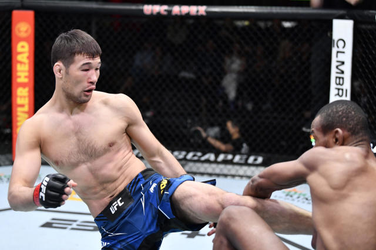

Welcome to the Portland Japanese Garden!!
this is only one of the marvelous sights you can see at the garden!

(click on the picture to see in full screen)
if you would like a full runthrough of the garden and how to purchase tickets, visit the website here
Here are some more sights that you can see at the Portland Japanese Garden!!


New assignment: Lists in html
Favorite foods
- Indian food
- Butter Chicken
- Potato Naan
- Samosa
- Mexican Food
- Burritos (almost any type)
- Street Tacos
-
- Specifically (in this order):
- Al Pastor Tacos
- Carne Asada Tacos
-
- Chorizo Tacos
- Chorizo con Papa (chorizo with potato)
New Assignment: Table
| My Favorite Movies/shows | rotten tomato score | My rating out of 10 | why I liked it |
| The Batman(Robert Pattinson) |
85% |
10/10 |
Batman has always been my favorite superhero, and I thought his story was portrayed perfectly in this movie |
| La La Land |
91% |
9/10 |
It is the only musical I like, I feel like it is great because it doesn't feel that it has to end with a happy ending. |
| Lion |
84% |
8/10 |
I felt like it was a little slow at parts, but it payed off at the end and was a very emotional story throughout |
| The Last Of Us |
96% |
9/10 |
I thought it was a brilliant representation of the game, but I felt it left some really cool parts out. |
New Assignment - Intro to CSS - 4/20
A Deep Dive Into Mixed Martial Arts (MMA)
Intro
Mixed martial arts (or MMA)is not for the queasy, nor the easily disturbed.
While it is a violent and at times gory sport, it can also be graceful.
"How can such a violent sport be graceful?" you may ask. Allow me to explain.
Mixed Martial Arts is made up primarily of -but is not limited to- five major martial arts:
Wrestling, Brazilian Jiu Jitsu, Muay Thai, boxing and kickboxing.
Again, though these are the most popular, there are many different styles that you can use in a MMA bout.
It has been seen that martial arts such as Kung Fu, Karate and (now making it's way into the mainstream) Judo have been seen,
though typically many MMA fighters stick to the basic five. No sport is easy, all take a level of technique and are physically demanding,
and MMA is no exception. Many (including me) consider MMA to be the most physically and mentally demanding sport on the planet.
MMA takes extreme discipline, and no doubt takes a physical toll, requiring a fighter to not only deliver, but take heavy strikes to he head and body.
In order for you to get a better grasp on MMA, I will go over the rules of the sport, the weight classes and some of the most promising prospects in the sport. .
Allow me to take you throught the brilliant and complex
sport of Mixed Martial Arts.
Rules
There are little, but important rules in the sport of MMA. In such a violent sport, following the rules can prevent very serious injuries.
For example, there is a rule against hitting your opponent in the back or especially in the back of the head.
Think what would happen if someone took a brutal strike to the spine, the results could be catastrophic for the victim.
Other rules meant to protect the fighters are rules such as these: no eye gouging or fish hooking (placing your finger in the opponents mouth) of any kind,-or really any other gouging that you an think of-,
no kicks or knee strikes to an opponent that is grounded, no throwing an opponent to the ground by their head or neck,
no head butting, no hair pulling and no groin strikes. Lastly the most important rule of them all: follow the referee's instruction at all time.
Failure to follow the referee's instruction can and almost always will end in disqualification.
Amongst these rules, there are more small technicalities that you must follow. But those are some of the most basic rules;
even in a fighting sport -which many consider to be barbaric already- there is still a system, after all, we are not animals.
Weight Classes
MMA is split into weight classes to ensure that the fight is fair. We wouldn't want to see a giant 260 pound man crush a mere 150 pound figher.
Weight classes depend on the league of mma that you are watching. Here is a table to help you understand the UFC (ultimate fighting championsip; one of the most popular leagues)
| Mens UFC Weight Classes | Maximum Weight |
| flyweight |
bantamweight |
featherweight |
lightweight |
welterweight |
middleweight |
light heavyweight |
heavyweight |
| 125 pounds |
135 pounds |
145 pounds |
155 pounds |
170 pounds |
185 pounds |
205 pounds |
265 pounds |
| Womens UFC Weight Classes | Maximum Weight |
StrawWeight |
FlyWeight |
BantamWeight |
FeatherWeight |
| 115 pounds |
125 pounds |
135 pounds |
145 pounds |
Best Prospects/Fighters in the Sport
Alexander Volkanovski
Alexander Volkanovski is a champion in the middleweight weight class and has one of the most impressive records in the UFC. at 25-2, alexander
had an incredible fight streak until the questionable decision in which Islam Makhachev won the fight after 5 brutal rounds.
Khamzat Chimaev
Khamzat Chimaev is one of the best fighters of the generation, and one of the most promising prospects. Though he missed the fight of
his career with Nate Diaz (my personal favorite fighter) because he missed weight, he still remains a brilliant and strategic fighter. He is a
3 time wrestling national champion in Sweden, and is very entertaining to watch. He quickly rose to the top most dangerous fighters in he division.
Yair Rodriguez
Yair Rodriguez is a very promising upcoming fighter. He is skilled with his shots, landing them with precision, intention and power.
His speciality is kicks, ending fights because of the power of these strikes. He has beaten big names like Brian Ortega, BJ Penn and Dan Hooker.
He is no doubt a disciplined and talented fighter.

Shavkat Rakhmonov
Shavkat Rakhmonov is a fighter that many consider could be one of the greatest of all time. He has an impressive fight streak and
all of his fights are made for the highlight reels. He is a talented striker and grappler, and knows fighting strategy better than
many in the division. I'm very excited to see where he goes in the UFC.
Conclusion
I hope you can now see some of the appeal to the sport of mixed martial arts. Many consider the sport to be needlessly violent,
but I believe that there is not only strategy in the sport, but some grace and class as well. I wish that your interest in the sport has been peaked,
and that possibly in the future you can enjoy the sport as well - either watching, or even participating in any aspect of the sport-.
{kind=link}
{kind=link}